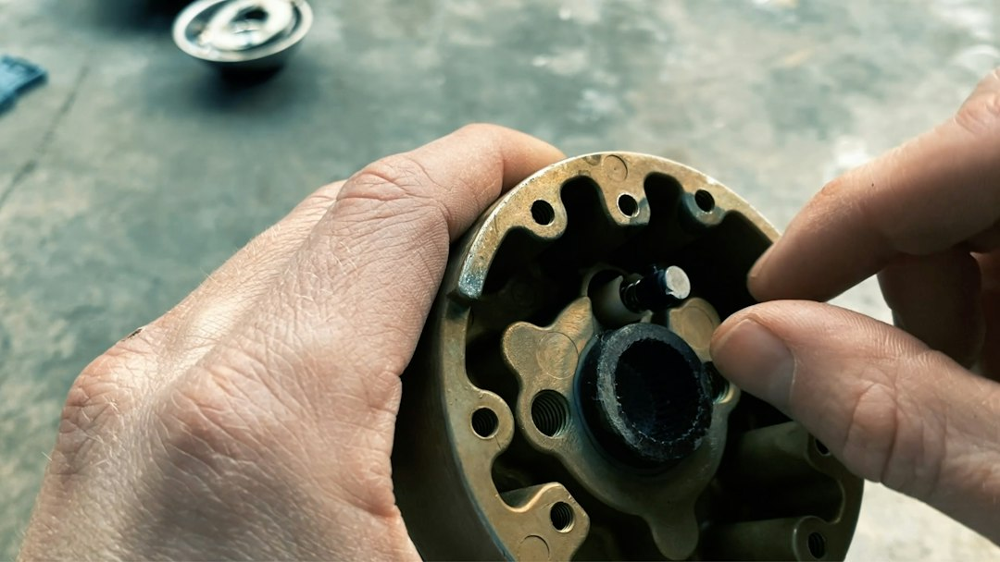

美 완성차 중국 부품 의존도 80% 삭감, 韓 Tier2 소재 3개 분기점

[자료사진] 기사와 무관한 이미지입니다.
GM·포드·스텔란티스 3사는 2027년까지 전장 부품 기준 중국산 의존도를 현행 수준 대비 80% 이상 삭감하겠다고 공식화했다. 미국 IRA(인플레이션감축법) 외국우려기업(FEOC) 조항이 2026년 배터리 부품, 2027년 핵심광물로 순차 적용되면서 OEM이 선제 대응에 나선 것이다.
중국산 부품 중 가장 대체가 시급한 품목은 ① 희토류 영구자석(NdFeB)을 쓰는 모터·액추에이터, ② 리튬인산철(LFP) 셀 내 양극재, ③ 전력반도체(SiC·GaN) 모듈이다. 세 품목 모두 중국이 글로벌 정제·가공 점유율 60~85%를 장악하고 있어 단순 국가 변경으로 해결되지 않는다.
한국 소재·부품 업계 입장에서 직접 수혜 가능 품목은 전력반도체 기판용 SiC 웨이퍼(SKC 자회사 SK실트론CSS 美 공장 가동 중)와 모터코어용 고급 전기강판(포스코·현대제철)이다. 그러나 Tier1 납품 인증까지 평균 18~24개월이 소요되어 2027년 데드라인과의 괴리가 있다.
미국 내 생산 거점을 이미 확보한 한국 기업과 그렇지 않은 기업 간 수주 격차가 이번 재편에서 결정적으로 벌어질 전망이다. FEOC 조항은 단순 '미국산 부품' 요건이 아니라 '미국 내 가공·제조' 비율까지 요구하기 때문이다.
이번 재편의 핵심은 '중국산 부품 교체'가 아니라 '중국산 소재 의존 공급망 전체의 탈구조화'다. 중국이 희토류·리튬·흑연 정제를 장악하고 있는 한, 최종 조립지를 멕시코나 한국으로 옮겨도 FEOC 제재를 벗어나지 못한다. GM이 LG에너지솔루션과 합작 셀 공장(Ultium Cells)을 지으면서도 양극재 소재 인증을 별도로 요구한 것이 이 논리의 현실 사례다.
한국 자동차 부품사에는 기회이자 함정이다. 현대모비스·HL만도 등 Tier1은 GM·포드 직접 RFQ(견적요청)를 이미 수령했지만, 실제 소재를 공급하는 Tier2·Tier3 중소기업들은 FEOC 적합성 심사를 통과할 서류 체계 자체가 없는 경우가 많다. 지원금 1,700억 원 확대(산업부 발표)가 인증 지원에 얼마나 연결되느냐가 관건이다.
SK실트론CSS(미국 미시간 SiC 웨이퍼 공장 가동)는 GM·포드 SiC 모듈 수요의 직접 수혜 후보다. 美 현지 생산 인증을 이미 확보한 상태여서 FEOC 요건을 충족한다.
포스코는 전기차 모터코어용 무방향성 전기강판 생산에서 글로벌 3위권이며, 미국 내 POSCO-IDAHO(스테인리스·전기강판 가공센터)를 통한 공급 확대가 가능하다. GM 전동화 모델 확대 시 수혜 직접화 예상.
현대제철은 전기강판 美 공급 네트워크를 2024년부터 구축 중이며, 2026년 이후 포드 공급망 진입 가능성이 높다는 업계 평가가 나온다.
중국 BYD 부품 계열사(비야디 부품·정빈자동차 등)는 미국 완성차 3사 공급망에서 사실상 퇴출 수순이다. 2024년 기준 포드의 중국산 전장 부품 비율은 약 35%였으나 2027년까지 7% 이하로 낮추는 목표가 공식화됐다.
중국 의존 한국 Tier2 중소기업이 가장 위험하다. 중국산 희토류 소결자석을 그대로 가공해 납품하는 구조를 유지하면 FEOC 조항에 걸려 OEM 공급 자격을 잃는다. 전환 비용이 연 매출 대비 15~30%로 추산되는 곳이 다수다.
Tier2·Tier3 소재·부품사는 지금 당장 미국 OEM 구매팀이 요구하는 FEOC 컴플라이언스 문서(소재 원산지 추적 체계, Conflict Minerals Report Template)를 내부에서 작성할 수 있는지 점검해야 한다. 없다면 2025년 말까지 구축하지 않으면 2027년 RFQ 응찰 자체가 불가능해진다.
투자자 시각에서는 SK실트론CSS 모회사 SKC, 포스코홀딩스(전기강판 부문), 제이앤티씨(SiC 기판 가공)를 단기 모니터링 대상으로 올려놓아야 한다. OEM 재편 일정이 가속될수록 이들의 수주 가시성이 높아진다.
실제 조달 현장에서는 — GM 구매팀이 2024년 하반기부터 2차 공급업체(Tier2)에게 직접 소재 원산지 증빙을 요청하는 사례가 급증했다. 과거에는 Tier1이 알아서 처리하던 부분인데, 이제 OEM이 소재 레벨까지 직접 들여다보기 시작한 것이다. 한국 중소 소재사들은 '영업 창구가 Tier1'이라는 인식을 버리고 미국 OEM 컴플라이언스팀과 직접 소통 채널을 열어야 한다.
이 포스팅은 쿠팡 파트너스 활동의 일환으로 수수료를 제공받습니다.